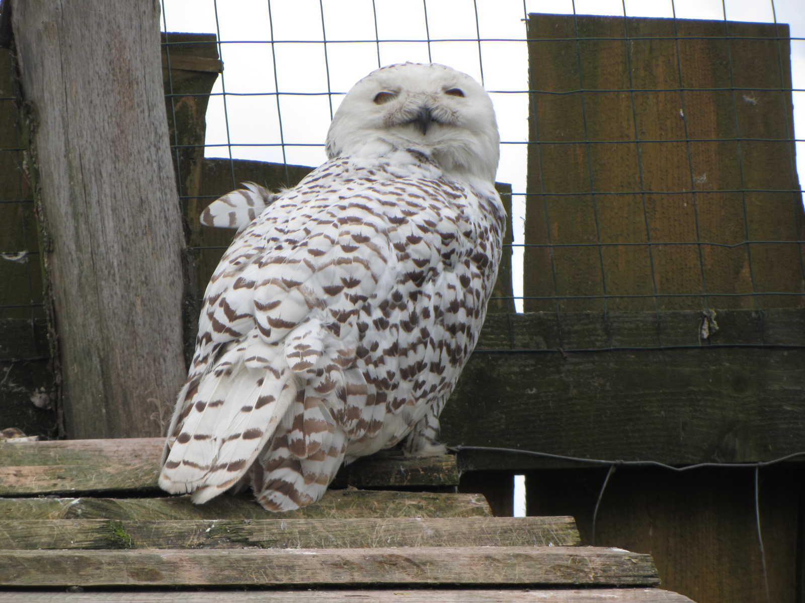
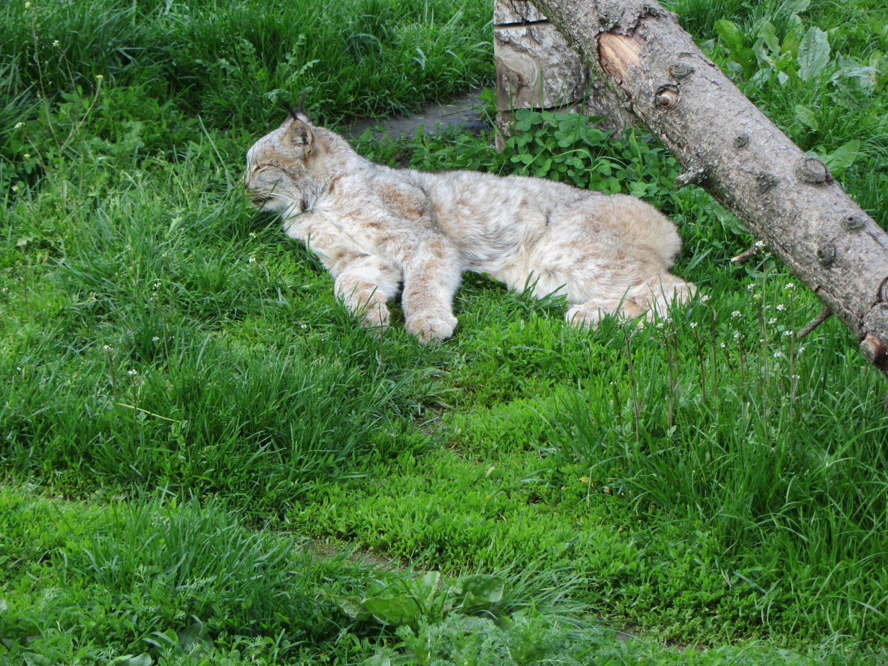
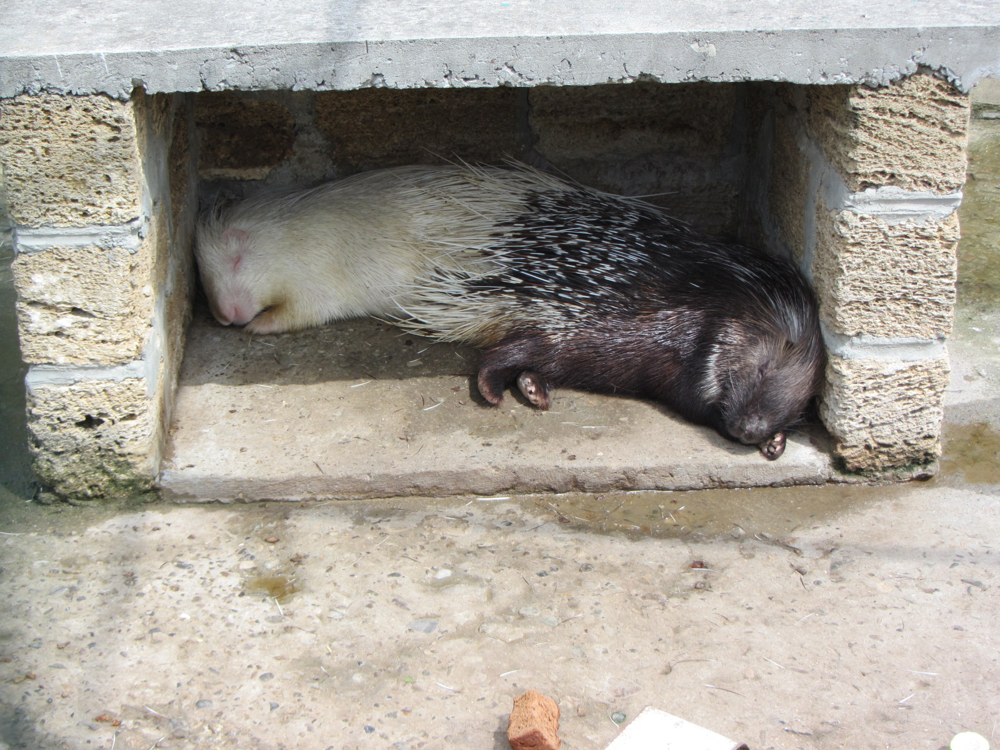
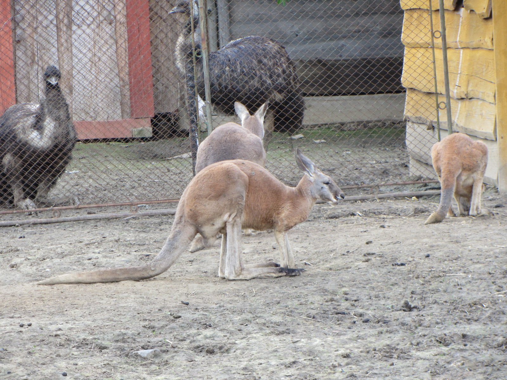
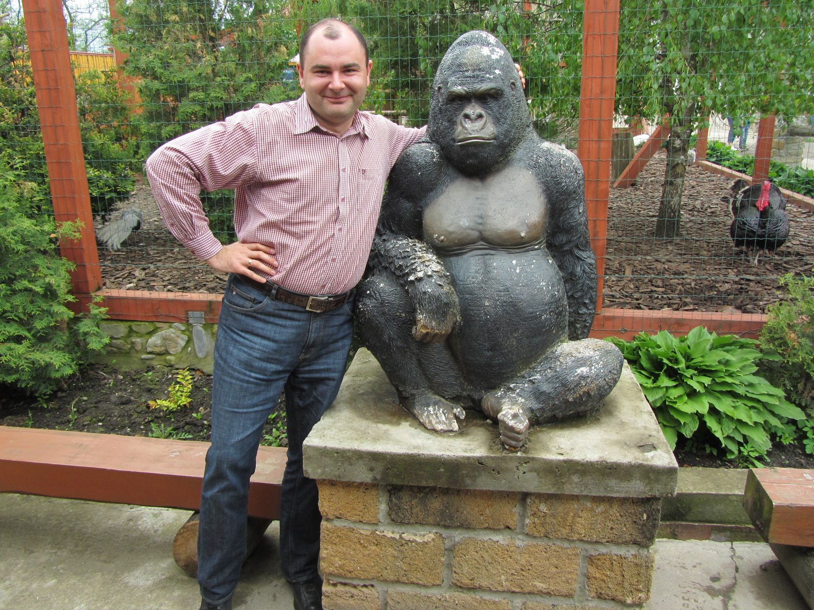

Меде́ницький зоопа́рк «Лімпопо́» — зоологічний парк місцевого значення в Україні. Розташований в межах Дрогобицького району Львівської області, при східній околиці смт. Меденичі.
Зоопарк названий за аналогією з другою за величиною африканською Крокодиловою річкою (Лімпо́по, англ. Limpopo River), хоча, станом на 2016 рік, якраз крокодилів в зоопарку і нема.
Лімпопо, Крокодилова (подеколи також невірне Лімпопо́; англ. Limpopo River) — річка у центральній частині Південної Африки, що переважно тече на схід, в напрямку до Індійського океану; друга за величиною африканська річка (після Замбезі), що впадає до Індійського океану.
Засновниками та співвласниками приватного зоопарку є дрогобичанин Сергій Костів та львів'янин Олександр Метелиця, які в 2008 році придбали 4 гектари землі і розпочали його будівництво. Обслуговуючий персонал станом на квітень 2016 — 10 осіб.
смт Меденичі, Дрогобицький р-н, Львівської обл. Тел. (067) 4069232, (067) 4069252 (Номери телефонів неперевірено)
Станом на 2015 рік в зоопарку вже утримувалось понад 300 тварин, в 2016 — понад пів тисячі. Серед завезених з усього світу тварин меденицького зоопарку є чимало рідкісних та унікальних. Це, наприклад, білі та уссурійські тигри, білі леви, леопарди трьох видів, чорні ягуари, а також наразі єдині в Україні канадські рисі, які занесені до всесвітньої програми захисту тварин. Гордість колекції — 8-річний «цар звірів» на ім'я Цезекс з вагою понад 300 кілограмів (Перелік тварин неостаточний)
Сова біла або Полярна(Nyctea scandiaca, Bubo scandiacus) — один з найбільших птахів ряду совоподібних. В Україні рідкісний залітний вид. Зрідка можна зустріти взимку в лісовій та лісостеповій смугах, іноді в степовій зоні, здебільшого на відкритих просторах.Довжина тіла 38—71 см, розмах крил 145—160 см, вага 1,5—2,5 кг, забарвлення сніжнобіле, або біле з бурими цяточками, плесно і пальці оперені.
Рись (Lynx) — рід хижих ссавців з родини котових (Felidae), найбільш близький власне до роду Кіт (Felis). Рід містить 4 сучасні види, поширені в Євразії та Північній Америці. Рисі характеризуються тим, що їхні вуха увінчані пучком чорного волосся, а тіла з коротким хвостом і довгими ногами. Рисі мають 28 зубів замість звичайних 30 зубів у інших членів родини Felidae.
Їжате́ць або дикобра́з(Hystrix) — рід гризунів з родини їжатцевих (Hystricidae), найбільший за видовим складом рід цієї родини. В Україні представники роду відомі за викопними рештками і за сучасними живими колекціями зоопарків.
Кенгуру́ — зоонім, назва великорозмірних сумчастих тварин з роду Macropus, ендеміків Австралії. Слово кенгуру походить від «ґенґуру» — так зветься кенгуру гігантський (Macropus giganteus) однією з мов австралійських аборигенів.
На останок - усім нам слід пам'ятати що тварини не "наші менші брати" бо вони були на Землі задовго до нас. Тож ставмось до них з повагою!
